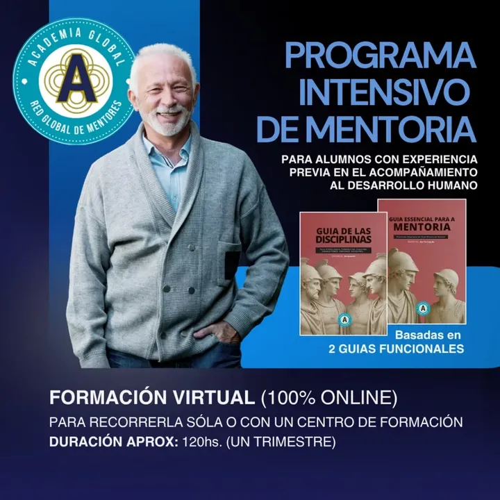

Programa Acadêmico Intensivo de Mentoria
Conteúdo teórico/prático da essência da mentoria.
Se você ainda não desenvolveu destreza na realização de sessões de acompanhamento ao desenvolvimento humano, recomendamos que este conteúdo seja acompanhado pela orientação de um «Teacher Mentor» da Academia Global.

Prefere começar acompanhado/a?
Para iniciar este percurso e, se considerar necessário, colocamo-nos à sua disposição para uma videochamada com um dos nossos Mentores Docentes, que poderá explicar-lhe o processo de formação. Solicite a entrevista por WhatsApp: +54 9 341 5421624.
Lembre-se de que pode participar em encontros de consulta para perguntar detalhes do processo de formação que não tenha entendido.
Bem-vindo/a à RGM e à GMN. Bem-vindo/a à Holding Mentors
O modelo estrutura-se em dois modelos complementares:
1. A Comunidade RGM (e GMN), como organização sem fins lucrativos focada em servir os mentores do mundo, desenvolvendo a disciplina da Mentoria com um enfoque espiritual e transcendente, utilizando o conceito de «DAO» para assegurar transparência e eficiência.
2. Ecossistema empresarial, através da Holding Mentors LLC, que converte o conhecimento da RGM e da GMN em produtos e serviços comerciais, criando receitas sustentáveis mediante empresas associadas que contribuem com royalties para a comunidade.
Damos-lhe as boas-vindas
Programa criado especialmente para profissionais com experiência prévia no acompanhamento ao desenvolvimento humano. Esta formação fornece-lhe o material assíncrono fundamental para adquirir conhecimentos essenciais sobre a Mentoria, permitindo-lhe avançar ao seu próprio ritmo e segundo a sua disponibilidade.
É necessária experiência prévia na condução de sessões com clientes, seja em Mentoria, Coaching, Aconselhamento, Consultoria ou outra disciplina de acompanhamento ao desenvolvimento humano. O desenvolvimento de habilidades de sessão não está contemplado nesta formação virtual.
Depois de concluir este programa, poderá aceder à Plataforma de Certificação, pagar a matrícula correspondente ao direito de exame e realizar a avaliação para obter a sua certificação como Mentor Especialista.
Leve a sua Mentoria a novas alturas com a Certificação CXPM!
A seguir apresentamos o Guia Essencial da Mentoria, com o seu caderno de bitácoras, correspondente a esta formação, e um Guia Integral das Disciplinas, para que desde o minuto zero possa compreender que papel tem a Mentoria dentro do ecossistema de disciplinas que existem para o desenvolvimento humano e organizacional.
Os conceitos fundamentais da visão da Academia RGM
Nestes vídeos encontrará os conceitos fundamentais que sustentam a visão da ACADEMIA RGM sobre a mentoria, uma visão desenvolvida ao longo dos últimos dez anos graças ao valioso contributo de filósofos e profissionais experientes nesta disciplina.
A ponte entre a experiência e a sabedoria
A reflexão como pilar da mentoria
A humildade
A integração profissional no desenvolvimento humano
A empatia do mentor
A arte da mentoria: consciência, método e cocriação
Além do êxito, rumo à expansão da consciência
Veja uma e outra vez cada um destes vídeos: eles encarregar-se-ão de que a sua mente, corpo e alma incorporem estes conceitos e de que, a partir desta formação, possa transformar-se num guia que acompanha a partir da compaixão e do amor.
Arquitetura doutrinal e 15 metacompetências
Arquitetura Doutrinal da Mentoria
Um mapa em dois pilares: o Caminho do Mentor (como a própria vida se transforma em sabedoria transferível) e o Ciclo de Intervenção Mentoral (a lógica do acompanhamento). Numa hora de leitura fica claro o que distingue mentorear de simplesmente aconselhar.
15 Metacompetências do Mentor
Não o que o mentor sabe, mas que qualidade de ser humano precisa de ser. Presença, discernimento, conversação, responsabilidade e transcendência: cinco domínios que ordenam as 15 capacidades-mãe do mentor contemporâneo.
Duas leituras breves e densas que dão a espinha dorsal doutrinal a tudo o que a Academia vem construindo, ideais para partilhar com Centros e Mentores Docentes como base comum de critério.


Características das sessões de mentoria
Neste vídeo encontrará os conceitos fundamentais que todo mentor deve compreender para transmitir a sua sabedoria de forma eficaz ao seu mentorado.
Dado que provém de outras disciplinas de acompanhamento —como a psicoterapia, o coaching, a consultoria, o aconselhamento, a docência ou a facilitação— é natural que traga consigo abordagens e metodologias próprias dessas práticas.
Na Academia RGM, o nosso objetivo nesta etapa é que possa identificar claramente as características específicas da Mentoria como disciplina e aprenda a aplicar o seu valioso conhecimento empírico sem cair na projeção pessoal sobre o mentorado. Esta aprendizagem é fundamental para exercer a mentoria de forma profissional, respeitando os princípios que a distinguem e garantindo uma relação autêntica e enriquecedora com cada mentorado.
Storytelling, o método mais eficaz para transferir sabedoria na mentoria
O Storytelling é uma das ferramentas mais eficazes que um mentor utiliza, pois consiste em partilhar, na primeira pessoa, uma experiência de vida que deixa um ensinamento valioso.
Nesta etapa pedimos-lhe que grave um vídeo de, no máximo, 5 minutos, no qual relate uma experiência pessoal e a lição que obteve dela. Para garantir a qualidade do material, recomendamos que o vídeo tenha boa iluminação, som claro e seja gravado em formato horizontal.
Exemplos de referência
A seguir, deixamos-lhe alguns exemplos de referência que podem ajudá-lo a preparar a sua entrega.
Esther Sadin
Walter Terán
Análise de caso
O que é uma «Análise de Casos» para um profissional da mentoria?
A Análise de Casos é uma prática reflexiva e metodológica em que o mentor revê, avalia e documenta os aspetos essenciais de uma sessão ou processo de mentoria realizado com um cliente. O seu propósito é compreender em profundidade o que aconteceu, identificar padrões, rever a eficácia das intervenções e assegurar que o processo se mantém dentro do quadro ético, profissional e metodológico da disciplina.
Em termos simples: é o exercício profissional que permite ao mentor converter uma experiência de acompanhamento em conhecimento acumulado, aprendizagem técnica e melhoria contínua.
A análise inclui elementos como:
- Contexto do cliente
- Objetivos e acordos estabelecidos
- Observações do mentor
- Intervenções aplicadas
- Reações ou progressos do cliente
- Avaliação do processo
- Dilemas, riscos ou decisões críticas
- Aprendizagens do mentor
- Próximos passos
É uma ferramenta fundamental na formação e na prática profissional do mentor.
Proposta de valor e mapa de valor
Neste vídeo encontrará os conceitos fundamentais que todo mentor deve compreender para distinguir e selecionar aquelas experiências de vida que fundamentarão a sabedoria com a qual o mentor irá gerar as suas propostas de valor.
Se entendemos que a proposta de valor é o benefício que o mentorado obterá da intervenção e orientação do mentor, ela desempenhará um papel muito importante na construção da imagem profissional. Por outro lado, toda proposta de valor deve ter o seu mapa de valor: que não é mais nem menos do que o processo, modelo ou metodologia que o mentor seguirá para acompanhar o mentorado rumo a esse benefício desejado.
Nesta etapa pedimos-lhe que redija as suas propostas de valor para as poder entregar como parte do seu exame de certificação.
LinkedIn: o seu perfil como Mentor Especialista RGM
Contar com uma imagem de marca sólida como Mentor Especialista é fundamental. Por isso, tanto para si como para a Academia RGM, é essencial que o seu perfil do LinkedIn reflita uma presença profissional coerente, atualizada e alinhada com os padrões internacionais da Rede Global de Mentores.
A estética e o conteúdo do seu perfil serão determinantes para a sua projeção global e para potenciar a sua visibilidade dentro do ecossistema RGM. Este aspeto faz parte integrante do processo de certificação como Mentor Especialista, já que empresas e organizações que solicitam serviços de mentoria à RGM são encaminhadas diretamente para os perfis dos mentores certificados. Um perfil profissional, claro e atrativo é o seu cartão de visita perante o mundo.
No documento que lhe facultamos tem como construir uma presença profissional sólida, coerente e atrativa que reflita a sua identidade como Mentor Especialista e o projete internacionalmente dentro do ecossistema RGM.
Encontro virtual com um Mentor Docente
Se já concluiu o processo de formação, é o momento de ter um encontro virtual com um Mentor Docente da Academia RGM. Será uma conversa agradável para rever alguns conceitos importantes que queremos que fiquem claros e para não perder o contacto humano que tanto cuidamos nesta comunidade.
Lembre-se de ter pronto para nos enviar:
- Vídeo de Storytelling.
- Sessão de mentoria.
- Análise de caso.
- Proposta / mapa de valor.
- Ter um LinkedIn que reflita a sua especialidade como mentor/a.
Solicite a entrevista por WhatsApp: +54 9 341 5421624.
O seu percurso profissional merece
Se já realizou a entrevista de encerramento:
- Pague a matrícula de certificação, caso ainda não o tenha feito.
- Envie os seus entregáveis por e-mail para: info@RGMentores.org
- Aguarde no máximo 30 dias para receber as suas credenciais.
Precisa de ajuda? Apoie-se no seu Centro de Formação ou escreva-nos por WhatsApp para +54 9 341 5421624. A nossa equipa terá todo o gosto em acompanhá-lo em todo o processo.